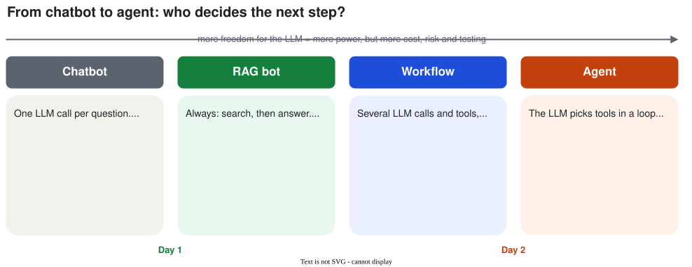
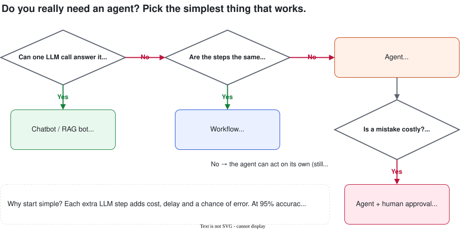

GenAI & Agentic AI Workshop · Day 2 · Session 6
From Chatbots to Agents
Yesterday it could talk. Today it learns to do.
Press → to move · S for speaker notes · F for full screen
Can CampusBuddy do this? 🤔
"When is my OS exam? If the library is open the day before, book me a study room for 2 hours in the morning."
- Needs live data (timetable), not a static FAQ
- Must decide based on what it finds (is it open?)
- Must act in another system (book the room)
A chatbot can't. An agent can.
Who decides the next step?

What makes an agent
🧠 Brain (LLM)
Understands the goal, decides what next, knows when it's done
🧰 Tools
Search, calculator, APIs, databases: its "hands"
📝 Memory
What happened so far, plus facts for next time
⚡ Actions
Tools that change things: book, send, pay. The risky part.
The agent loop: ReAct

Watch it think 👀
| 💭 | I need the OS exam date first. |
| 🛠️ | get_exam_date(subject="OS") → Mon 14 Dec, 2 PM, Hall A |
| 💭 | Day before = Sunday 13 Dec. Is the library open? |
| 🛠️ | get_library_hours(date="2026-12-13") → 10:00–16:00 (exam month) |
| 💭 | Open. Two morning hours = 10 to 12. Book it. |
| 🛠️ | book_study_room("2026-12-13", "10:00", 2) → confirmed, room S3 |
| ✅ | "OS is Mon 14 Dec, 2 PM, Hall A. I booked room S3, Sun 10 AM–12 PM." |
If the library were closed, it would stop after 2 tools. Steps depend on what it finds.
The loop in code (preview)
def run_agent(goal, tools, max_steps=8):
memory = [goal]
for step in range(max_steps): # always cap the loop!
decision = llm(memory, tools) # THINK
if decision.is_final_answer:
return decision.text
result = tools[decision.tool](**decision.args) # ACT: YOUR code runs it
memory.append((decision, result)) # OBSERVE
return "Sorry, I couldn't finish that."Session 7: we write the real version with function calling.
Tools: the LLM asks, your code runs
| Tool | Risk |
|---|---|
search_faq(question) · get_exam_date(subject) | Read-only: low |
calculator(expression) | Low |
book_study_room(date, start, hours) | Changes data: medium |
send_email(to, subject, body) | High: ask a human first |
Your code stays in control, so that's where permissions and checks go (Session 5).
Memory and planning
📝 Memory
- Short-term: this task's goal, thoughts, results (re-sent each step)
- Long-term: "Priya prefers morning slots", saved in a DB
🗺️ Planning
- Step by step (ReAct)
- Plan first, then execute
- Reflect: check its own work
Do you really need an agent?

Mistakes multiply
95% right per step
× 10 steps
= ~60% right overall
Use the simplest thing that works.
Workflows: cheaper, faster, easier to test. Agents: only for open-ended tasks.
Agents in the real world 🌍
💻 Coding agents
Claude Code, GitHub Copilot agent mode, Cursor
🔬 Research agents
"Deep research" in ChatGPT, Gemini, Claude
🎧 Support agents
Look up orders, refund within limits, escalate
🖱️ Computer-use agents
Click and type in a browser like a person
Common pattern: clear goal + good tools + limits on risky actions.
Be the agent 🎭 (10 min)
👤 User
Reads out a goal card
🧠 Agent
Writes Think lines. Can only ask for exact tool calls
🧰 Tools
Answers only from the tool cards. Wrong format = ERROR
- Study the evening before CN? If yes, book 2 hours from 6 PM.
- Book a 4-hour room the day before DBMS.
- Days between my first and last exam?
- When is my Maths exam?
Agent or not? 🗳️
| Task | Pick |
|---|---|
| Answer questions from the handbook | RAG bot |
| Daily 8 AM complaint summary to the principal | Workflow |
| Route complaints + draft replies | Workflow (routing) |
| Plan my study week and book rooms | Agent |
| Fix a failing test in a big codebase | Agent |
| Decide who gets the scholarship | Human decides (AI assists) |
Recap
- Chatbots talk; agents do
- Who decides the next step? Code = workflow, LLM = agent
- Brain · tools · memory · actions
- ReAct: think → act → observe → repeat (capped!)
- The LLM asks; your code runs the tool
- Simplest thing that works. Humans approve risky actions
Up next · Session 7
Tool Calling and MCP
Write the real agent loop in Python, then share your tool with any AI app using the Model Context Protocol
Questions? 🙋